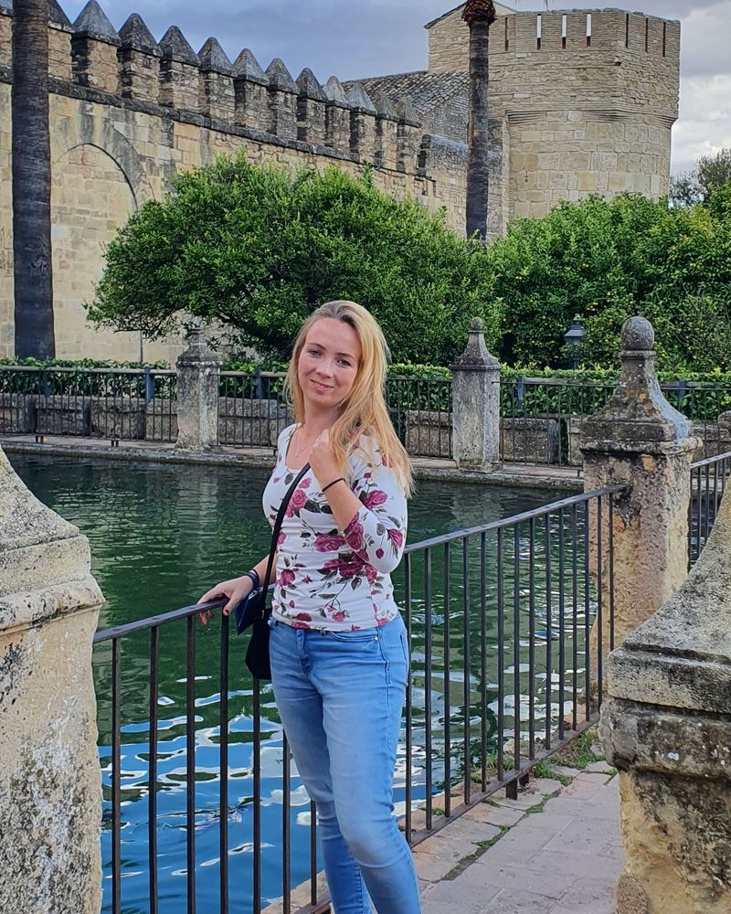
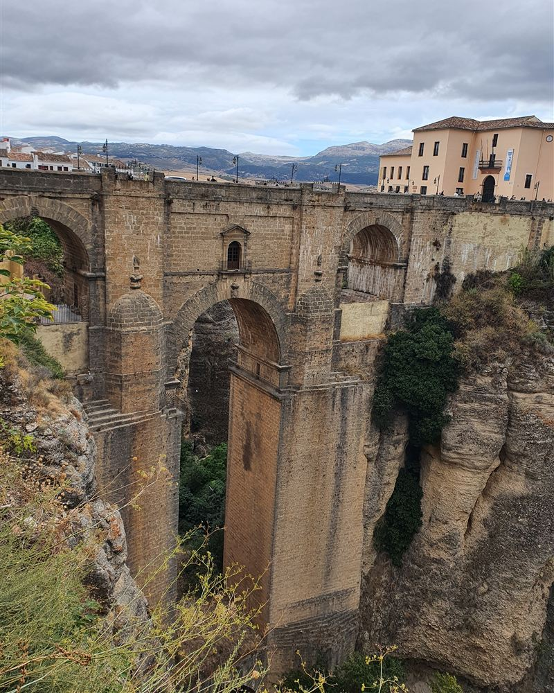
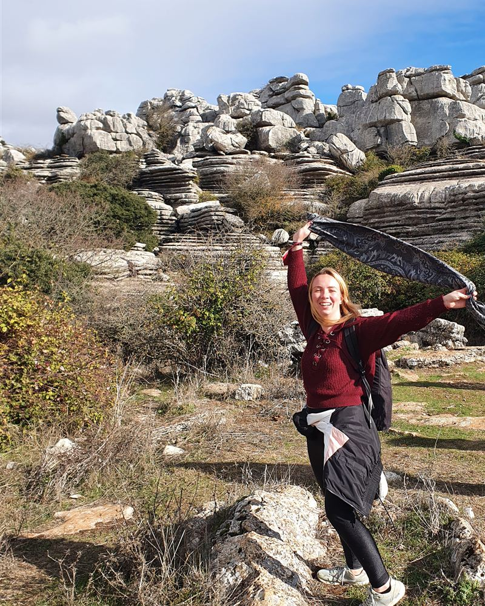
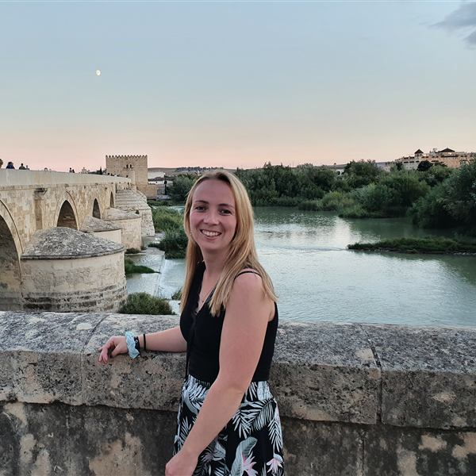
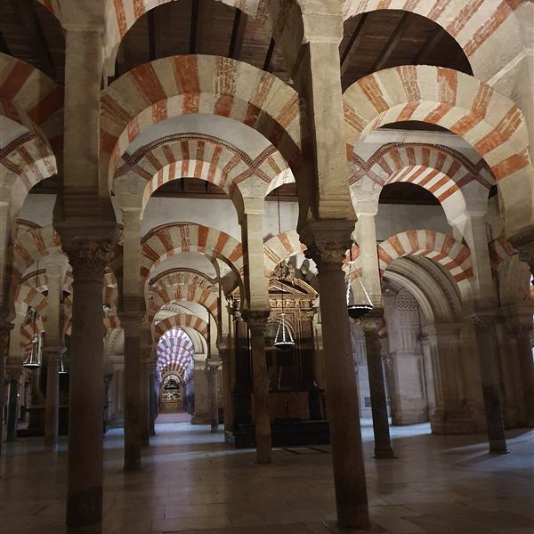
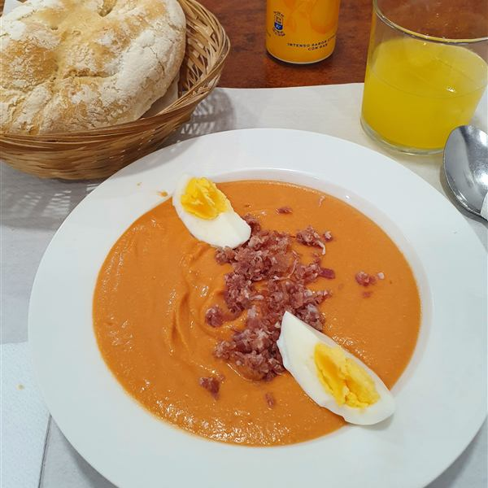
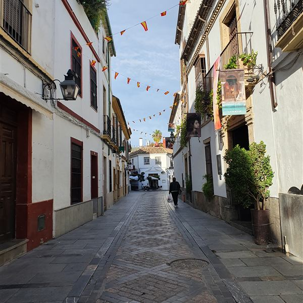
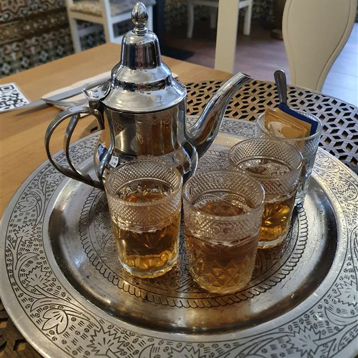
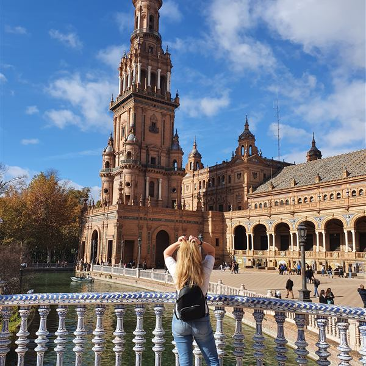

zwischen Sprachen und Kulturen
Hallo, ich bin Nadja: Social Media zwischen Spanien und Deutschland
Ich helfe Hotels, Touranbietern und Restaurants, auf Deutsch und Spanisch über Social Media Gäste aus dem anderen Land zu erreichen. Dafür bringe ich vier Sprachen mit (Deutsch, Spanisch, Englisch und Französisch), ein halbes Jahr Leben in Córdoba und den Blick für beide Kulturen.
Erstgespräch anfragen
Wie Sprachen und Kulturen mein Zuhause wurden
- Nach dem Abitur7 Monate Weltreise, davon 7 Wochen in Peru
- 2019–2024Bachelor International Business, TH Nürnberg Georg Simon Ohm
- 2021/22Erasmus in Córdoba
- 2023–2025HR und Learning & Development in der Automobilbranche
- 2026Weiterbildung Social Media, Content und Online Marketing (ADZ)
- 2026Puentina
Mein Spanisch beginnt in Peru. Nach dem Abitur war ich sieben Monate auf Weltreise, sieben Wochen davon in Peru: die ersten Sätze auf Spanisch, viele Begegnungen und der Wunsch, später international mit Sprachen zu arbeiten. So kam ich zum Studium International Business, mit Spanisch als Fremdsprache. Von September 2021 bis Februar 2022 lebte ich in Córdoba. Seitdem weiß ich, wie anders sich ein Land anfühlt, wenn man dort wohnt statt Urlaub macht.
Im Beruf ging es zunächst um Menschen statt um Marken. In der Personalabteilung eines internationalen Automobilzulieferers mit französischem Mutterkonzern organisierte ich Führungskräftetrainings und bewarb sie im Intranet. Für das Aktienprogramm der Mitarbeitenden entstand eine Präsentation auf Deutsch und Englisch: ein trockenes Thema, verständlich für alle.
Inhalte so aufbereiten, dass sie bei Menschen in einer anderen Sprache ankommen: Das ist bis heute mein roter Faden. 2026 folgte die Weiterbildung in Social Media, Content und Online Marketing, und daraus ist Puentina entstanden.
Was ich mitbringe
Sprachen
Deutsch als Muttersprache; Spanisch, Englisch und Französisch fließend.
Erfahrung
Content Marketing, Social Media Strategy, Community Management, visuelles Storytelling.
Kultur
Zu Hause in Deutschland, mit dem Herzen in Andalusien.
So arbeite ich
nahbar
Du hast eine feste Ansprechpartnerin und schreibst direkt mir.
strukturiert
Am Anfang steht ein Plan mit klaren Themen und Terminen, damit nichts dem Zufall überlassen bleibt.
praxisnah
Ich schlage nur vor, was du im Alltag deines Betriebs auch umsetzen kannst.
ehrlich
Keine Garantien für Reichweite, ein Angebot passend zum Betrieb.

Warum Puentina?
„Kleine Brücke“ zwischen Sprachen, Kulturen und Menschen.
Puente heißt auf Spanisch Brücke, und genau das möchte ich für dich sein: die Verbindung zwischen deinem Betrieb und Gästen aus dem anderen Land. Deshalb zeigt mein Logo einen Bogen wie den einer Brücke, darüber die andalusische Sonne. Klein ist die Brücke, weil ich persönlich arbeite und keine große Agentur bin.
Remote und regelmäßig in Spanien
Wir stimmen uns per Videocall und E-Mail ab. Das Erstgespräch führen wir per Zoom, es dauert etwa 30 bis 45 Minuten und ist kostenlos. Auf Anfragen antworte ich innerhalb von zwei Werktagen.
Ich arbeite von Deutschland aus und bin regelmäßig in Spanien. So kenne ich beide Seiten: wie deine deutschen Gäste planen und wie es vor Ort wirklich aussieht. Fotos und Videos von deinem Betrieb lieferst du, und ich sage dir, welche Bilder noch fehlen.

Weiterbildung und Hintergrund
Von Juli bis November 2026 habe ich mich an der Akademie für Digitale Zukunft (ADZ, Morphos GmbH, Potsdam) in Vollzeit weitergebildet: fünf Module mit je 180 Unterrichtseinheiten, jedes mit Zertifikat.
- Social-Media Experte mit Vertiefung (Juli 2026): Content-Strategien, Kampagnen, Community Management
- Social-Media Experte (September 2026): Social-Media-Planung, Redaktionsplanung, Analytics und Reporting, Recht und Ethik
- Digital Content Creator (Oktober 2026): Fotografie und Video für Social Media, Storytelling, Content-Planung
- Online Marketing (Abschluss November 2026)
- Projektmanager Agile (August 2026): Scrum, Kanban, Design Thinking
Die Zertifikate zeige ich dir gern im Erstgespräch.

Was mich sonst begeistert
Am liebsten bin ich mit dem Rucksack unterwegs und übernachte in Hostels, wo man schnell mit anderen Reisenden ins Gespräch kommt. Mein Lieblingsort in Spanien ist Valencia, und an Südamerika habe ich seit meiner Weltreise mein Herz verloren. Ich klettere und bouldere, reite am liebsten draußen in der Natur und tanze Salsa und Bachata. Zu Hause wartet mein Hund.
Und in Spanien liebe ich die Tradition, zum Bier eine Tapa zu bekommen: Croquetas de jamón, Gambas al ajillo und Salmorejo, das ich in Córdoba sogar selbst zu kochen versucht habe. Nur Pulpo darf mir niemand bringen.
Erinnerungen aus meinem halben Jahr in Andalusien
Mein Spanien in Bildern





